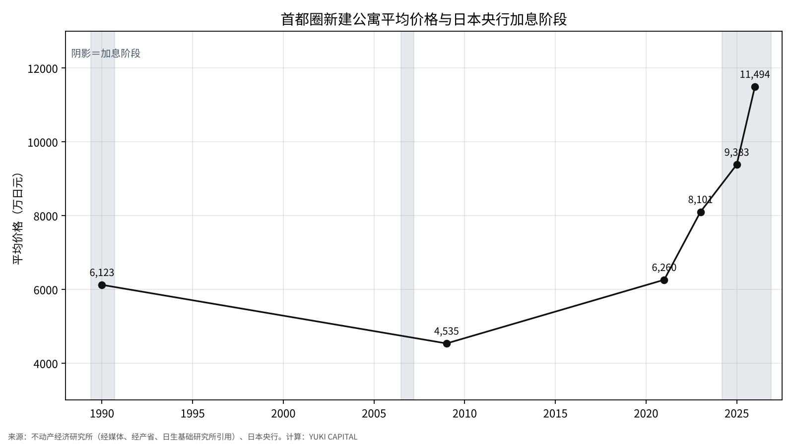
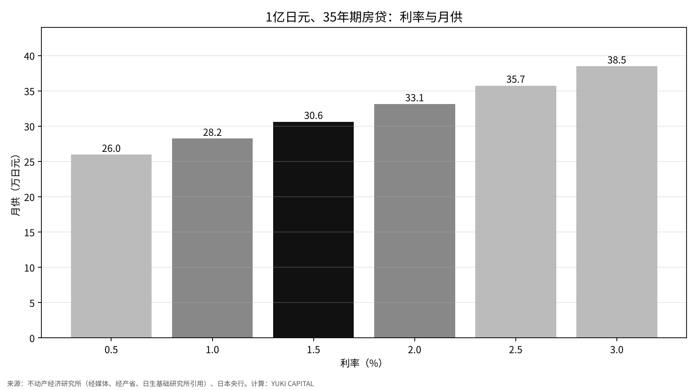

日本央行若在12月加息至1.5%，东京公寓价格将如何变动？——用不动产经济研究所和国土交通省的数据检验1990年、2006年与2024年以后的加息
日本央行将在12月17日至18日的货币政策会议上，决定是否把政策利率从1.25%上调至1.5%。市场多数人预计会加息。
另一方面，东京23区新建公寓的平均价格在2025财年创下1亿3,784万日元的新高。2026年10月同比下跌15.5%，为1亿2,937万日元，是4个月来首次下跌。
本文的问题是：在日本过去的加息阶段，首都圈公寓价格滞后多久、变动多大？加息至1.5%又会让购房者的月供增加多少？

- 在过去三次加息阶段中，价格大幅下跌的只有1990年一次。当时官方贴现率从2.5%升至6.0%，上调3.5个百分点，同时还叠加了针对银行房地产贷款的总量管制。
- 在2006至2007年加息至0.5%、以及2024年以后加息至1.25%的阶段，首都圈新建公寓价格没有下跌，反而上涨。加息幅度小，建筑成本和都心需求被认为支撑了价格。
- 从还款看，借款1亿日元、期限35年，利率从1.0%升至1.5%，月供约从28.2万日元增至30.6万日元，约增加8.5%。同样每月还30万日元，可借额度约从1亿628万日元降至9,798万日元。
问题与背景
这里说的“政策利率”，是指日本央行引导的短期利率。到1990年代为止是官方贴现率，现在是无担保隔夜拆借利率的引导目标。日本的浮动房贷利率容易随这一短期利率变动。
日本央行于2024年3月结束负利率，随后在2025年12月加息至0.75%，2026年6月至1.0%，9月至1.25%。10月会议维持1.25%不变，但判断基础通胀与2%的目标“大体一致”。
截至11月20日，有统计显示市场对12月加息0.25个百分点的预期约为84.7%。在政策委员之间，对于既不刺激也不抑制经济的中性利率位于1.1%至2.5%之间的哪一处，看法不一。加息是停在1.5%还是持续到2%，也会影响房贷利率的走向。
本文使用两个价格尺度。一是不动产经济研究所的首都圈新建分售公寓平均价格，自1973年起连续统计。二是国土交通省的不动产价格指数（2010年平均＝100），反映包括二手在内的公寓成交价格。
数据与方法
新建公寓平均价格取自不动产经济研究所的公布值，以及引用该数据的日本经济产业省和日生基础研究所的资料。1990年为6,123万日元，2009年为4,535万日元，2021年为6,260万日元，2023年为8,101万日元。
加息阶段依据日本内阁府的经济白皮书、财务省的财政史和日本央行的资料确认。1989年5月至1990年8月，官方贴现率从2.5%升至6.0%。1991年7月转为下调。
敏感性分析采用等额本息公式，计算借款1亿日元、期限35年（420期）时，利率从0.5%到3.0%共6种情形下的月供。并反推每月还款30万日元时的可借上限。
结果
| 阶段 | 政策利率 | 首都圈新建公寓价格 | 之后 |
|---|---|---|---|
| 1989–1990年 | 官方贴现率2.5%→6.0%（+3.5个百分点） | 1990年6,123万日元（当时最高） | 1992年1月公示地价同比下跌4.6%；23区新建公寓2002年跌至4,003万日元 |
| 2006–2007年 | 0%→0.5%（+0.5个百分点） | 上升趋势，2009年4,535万日元 | 雷曼危机后下跌，难以与加息区分 |
| 2024–2026年 | −0.1%→1.25%（+1.35个百分点） | 2023年8,101万日元→2026财年上半年1亿1,494万日元 | 2026年10月23区同比下跌15.5% |

在1990年的阶段，加息开始约两年后，地价下跌才变得明显。1992年1月的公示地价同比下跌4.6%，为1975年以来首次下跌。股价从1989年底的38,915点下跌约60%。
在2024年以后的阶段，政策利率上调1.35个百分点期间，首都圈新建公寓价格站上1亿日元。国土交通省的公寓价格指数在2025年12月达到225.1，是2010年的2.25倍。
2006至2007年的加息幅度只有0.5个百分点。改变价格走势的是2008年雷曼危机引发的全球金融动荡。很难从这一阶段中单独提取加息的效果。
从收入与还款看负担
从收入和还款两个角度看，价格之高的含义会不同。据日生基础研究所估算，首都圈新建公寓的房价收入比在2021年为10.53倍，超过1990年的9.34倍。
另一方面，同一研究所估算，2023年的房贷还款额仅为泡沫时期的八成。1990年的房贷利率远高于现在，即使价格更低，月供也更重。
也就是说，现在的高房价在很大程度上依赖低利率。利率上升后，即使价格不变，还款也会变重，能买得起的人会减少。加息影响房价的路径，正是通过这种还款负担。
敏感性分析
| 利率 | 1亿日元、35年的月供 | 还款总额 | 每月30万日元可借上限 |
|---|---|---|---|
| 0.5% | 约26.0万日元 | 约1亿903万日元 | 约1亿1,557万日元 |
| 1.0% | 约28.2万日元 | 约1亿1,856万日元 | 约1亿628万日元 |
| 1.5% | 约30.6万日元 | 约1亿2,860万日元 | 约9,798万日元 |
| 2.0% | 约33.1万日元 | 约1亿3,913万日元 | 约9,056万日元 |
| 2.5% | 约35.7万日元 | 约1亿5,015万日元 | 约8,392万日元 |
| 3.0% | 约38.5万日元 | 约1亿6,164万日元 | 约7,795万日元 |

利率每上升0.5个百分点，同样月供下的可借额度约减少7%至8%。从1.0%升至1.5%，可借上限约减少830万日元。对浮动利率借款人来说，这一差距会在几年内体现在月供上。若升至2.0%，1亿日元、35年的月供约为33.1万日元，比1.0%时约重4.9万日元。还款总额的差距扩大到约2,057万日元。
不过，决定价格的不只是借款人。据说都心的高价物业中，现金买家和海外投资者的比例较高，房贷利率对他们影响较小。利率的影响可能先在借款购房者较多的郊区和二手房中显现。
讨论
一种相反的看法认为，加息说明经济和工资向好，房价反而会得到支撑。事实上，2024年以后加息期间，房价持续上涨。建筑成本上升和人手不足减少了新建公寓的供给，也推高了价格。
另一种相反的看法是，只要日元持续疲软，从海外看东京房产就显得便宜，买盘会持续。美元兑日元约为158日元，对持有美元的买家而言，东京的1亿日元约为63万美元。若日本加息推动日元升值，这种便宜感就会减弱。
本文有三点局限。第一，新建公寓平均价格会随当月销售物业的位置和面积大幅波动；2026年10月下跌15.5%，主要是因为都心高价项目没有推出。第二，过去三个阶段的情况各不相同，1990年还叠加了总量管制这一强力的贷款限制。第三，1.5%之后还会加到多少，日本央行内部看法也不一致。
检验的标准是国土交通省的公寓价格指数是否转为同比下跌。与新建公寓平均价格相比，包含二手房的指数较少受物业构成的影响。
结论
在日本过去，加息令房价大幅下跌的只有1990年，当时3.5个百分点的急剧紧缩与贷款总量管制同时出现。从1.25%到1.5%的0.25个百分点，与之相比小得多。
即便如此，借款购房者的还款负担一定会加重。以1亿日元、35年计算，每月相差约2.4万日元，总额相差约1,000万日元。在问房价是否会下跌之前，我想先用数字看清：同样的月供能买到的房子会变小。我认为，价格用国土交通省的指数确认，还款用自己家庭的数字确认，比较好。
我的看法
我住在日本，我认为日本央行12月会加息。我觉得今年已经证明，只要日美利差不缩小，日元就会贬值。
我自己卖掉了继承的物业中的一处，还清了全部借款，把资本转向了银行股。我现在没有借款，所以加息不会增加我的负担。对于要买房的人，我认为与其现在急着用长期浮动利率贷款买房，不如等到价格下跌，先存钱或在别处投资。
出典
- 不动产经济研究所 首都圈新建分售公寓市场动向（共同社 2026年11月19日） https://kumanichi.com/articles/2059658
- 不动产经济研究所 2026财年上半年首都圈新建公寓（共同社 2026年10月20日） https://www.kanaloco.jp/news/economy/article-1313865.html
- 日本经济产业省“新建分售公寓价格高涨”（2024年12月12日） https://www.meti.go.jp/statistics/toppage/report/minikaisetsu/hitokoto_kako/20241212hitokoto.html
- 日生基础研究所“首都圈新建分售公寓价格比泡沫时期高三成”（2024年1月31日） https://www.nli-research.co.jp/files/topics/77402_ext_18_0.pdf?site=nli
- 日本内阁府《平成3年度经济白皮书·金融》 https://www5.cao.go.jp/keizai3/keizaiwp/wp-je91/wp-je91-s0024.html
- 日本内阁府《平成4年度经济白皮书·资产价格下跌的影响》 https://www5.cao.go.jp/keizai3/keizaiwp/wp-je92/wp-je92-00106.html
- 日本财务省财务综合政策研究所《平成财政史》 https://www.mof.go.jp/pri/publication/policy_history/series/h1-12/6_1_1.pdf
- 日本国土交通省 不动产价格指数（2025年12月）（2026年3月31日） https://www.mlit.go.jp/report/press/tochi_fudousan_kensetsugyo05_hh_000001_00256.html
- 日本央行 植田总裁 参议院说明（2026年11月19日） https://www.boj.or.jp/mopo/diet/d_state/data/dst261119a.pdf
- 共同社“下次加息‘能做时就做’”（2026年11月10日） https://kumanichi.com/articles/2056048
图表由YUKI CAPITAL制作。照片：Joshua Griffiths（Unsplash）
我在X上记录每天的数字与判断。